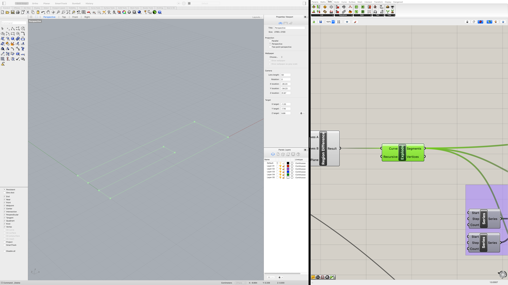
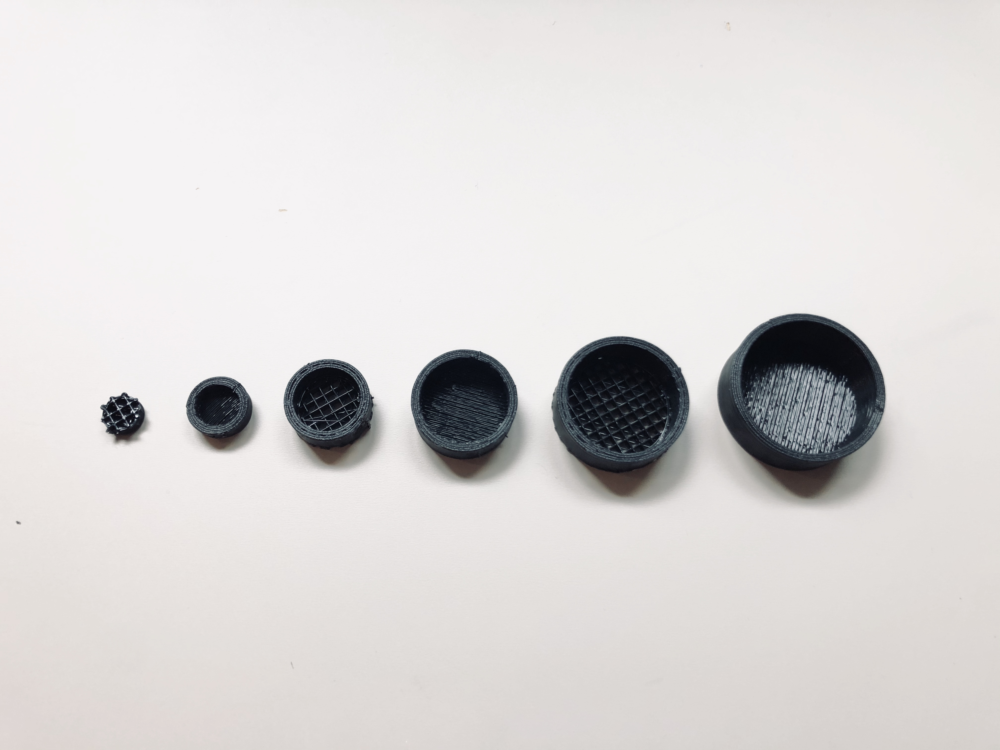

WEEK 4
Getting started with Grasshopper!
In this assignment, I designed a parameterized clipper and a nested structure using Grasshopper. You can access the final .gh file here.
Task 1: Making a Construction Kit
I started this task by quickly sketching out what I wanted for this kit. I landed on the idea of a 90º clip to create a 10cm x 10cm x 10cm cube out of cardboard.
Creating The Shape

To create the shape in Grasshopper, I started by creating the outer rectangle and the inner cutout rectangle using the thickness of the cardboard as the parameter. I then moved the inner cutout to the right position and used the Region Difference module to cut out the inner rectangle from the outer shape.
Filleting Corners
To create a more usable clipper, I wanted to make sure that the inner cutout had rounded corners so that it can be inserted into a cardboard more smoothly. This took a lot of trial and error, but the resulting process I used to acquire rounded corners was to first explode the closed curve into individual open curves.
I then indexed into the list of open curves to figure out which curve pertained to which section of the shape, joined them together, and filleted them accordingly.
To convert the shape back to a closed curve, I then merge the lists of open curves together, flatten the tree, and used the join module to connect them together.
Transforming The Extrusion
With the shape formed, I extrude it by 2cm and created a duplicate that is overlaps the base at 90 degrees through a series of rotates and moves. Since the move would depend on the thickness of the cardboard, I used the parameter as a input to a series of arithmetic calculations which then feeds into the move module. The two resulting shapes are then unioned into a single object.
Creating a Box Array
Finally, I used the box array module to create multiples of the clipper and baked them into Rhino. I then exported the clippers into an .stl format and imported it into Cura.
Printing The Clippers
I started the initial print with a skirt and low quality setting to speed up the printing process. Unfortunately, since the objects were small and relatively thin, they did not adhere to the bed very well.

I stopped the print halfway through and re-sliced the objects with a brim setting instead and the prints turned out a lot better.
Results
The resulting cube was surprisingly sturdy. Some of the clips were tighter than usual since I couldn't fully clean out the brims in time.

It also passed the shaking test! I even dropped it on the floor several times at height of 3 feet and everything was still intact.

Task 2: Making Nested Objects
I started this project by creating the 2D rings following Jasper's tutorial.
Varying the height
To nest the shapes within each other, I needed to vary the height of each of the cylinderical objects. To do this, I fed the extrusion module a list of heights and grafted the list to match the level of hierarchy from the list of rings.

Creating The Caps
To cover each of the cylinders at their respective heights, I first extruded the surfaces by a fixed amount, then used the list of heights created from before to move each of the caps.

Capping The Cylinders
At the end of the Grasshopper sequence, I merged the cylinders and the caps into a single tree and used the solid union function to merge them into 3 objects.
The shapes are then baked and exported into .stl format. The screenshot below shows the bottom perspective view of the nested object in Rhino.
Printing The Object
To ensure that structure can sustain during print, I added supports in the print setting. I iniitally also added the brim setting to ensure plate adhesion, but the resulting print was extremely hard to separate with the brim merging the bottom of all three objects.

To solve this issue, I changed the plate adhesion back to skirt. The resulting print was easier to detach. The support structures (cylinders with a grid pattern) were a little hard to detach, but nothing unmanageable. For future prints though, I'll try to tweak the support settings so that they are thinner and more easily removable.
